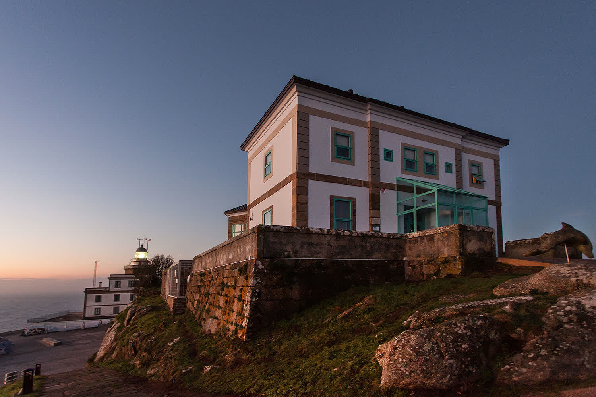
Donde termina la tierra y comienza el Atlántico. Un edificio de 1853 convertido en hotel delicatessen, a 138 metros sobre el mar, junto al Faro de Fisterra.
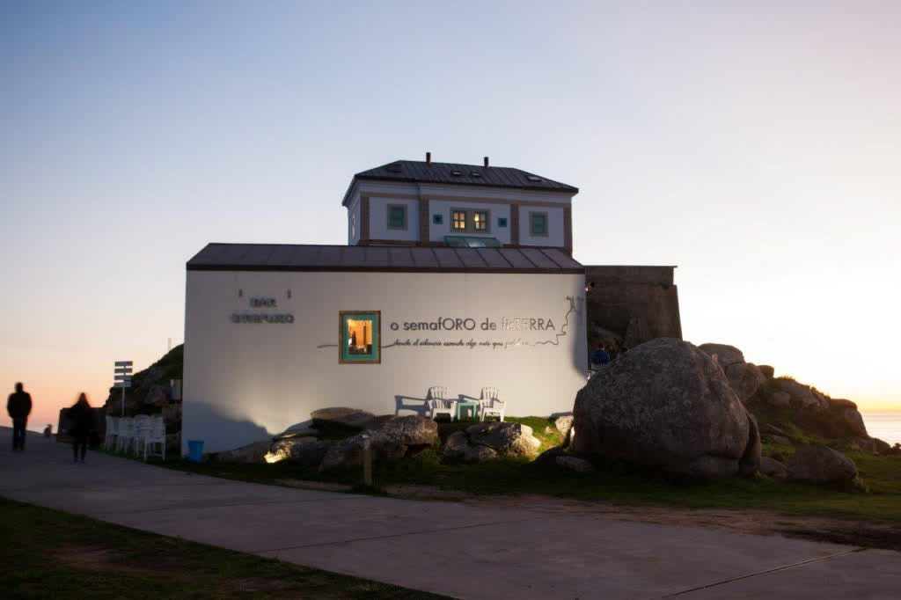
Antiguo cuartel de vigilancia marítima reconvertido en 1999 en un hotel delicatessen de 6 habitaciones. Cada rincón respira historia, mar y producto gallego de primera.
A tus pies, el Atlántico infinito. Sobre tu cabeza, la Vía Láctea. Cada cuatro segundos, el haz del faro cruza la noche. No hay otro hotel así.
Ver habitacionesConstruido en 1853, el edificio del semáforo se levantó para comunicar con las embarcaciones mediante banderas y señales.
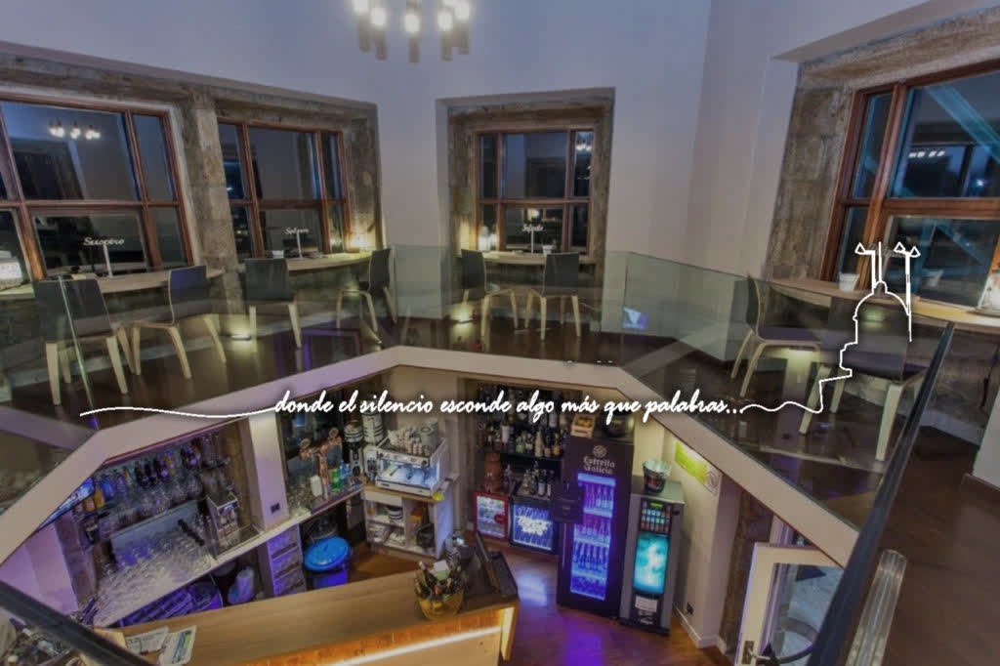
6 habitaciones, un restaurante con producto del mar a la vista, y la certeza de que aquí no queda nada por descubrir salvo lo esencial.
Reservar estancia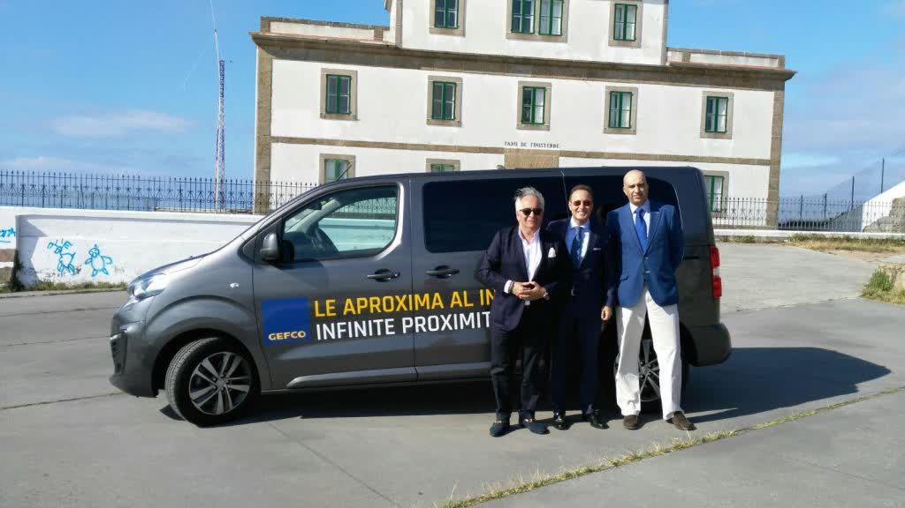
No es solo un hotel. Es una experiencia sensorial donde la gastronomía gallega impregna cada rincón.
Un nuevo concepto de alojamiento donde lo delicado, lo exquisito y lo exclusivo se funden con la tradición gallega. El hotel combina el alojamiento de alto nivel con una selección permanente de productos gourmet de Galicia: vinos, licores, conservas, patés y mieles que encontrarás en cada rincón.
Todo pensado para despertar los sentidos desde el primer momento. Desayunos originales con producto del entorno, servicio de habitaciones y el lujo del silencio absoluto a 138 metros sobre el mar.
Conexión de alta velocidad en todo el hotel
Servicio de habitaciones a cualquier hora
Bañera de hidromasaje en cada habitación
Productos ecológicos de cosmética natural
Seguridad en cada habitación
Televisión con acceso a Dolby Surround
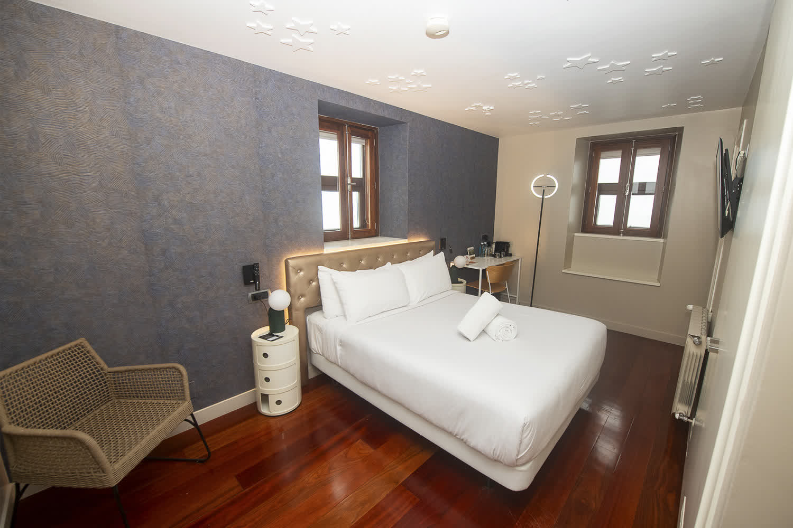
Cada una cuenta una historia distinta del mar, del faro y de los naufragios. Todas con vistas al infinito.
La Vía Láctea pasa justo sobre este hotel. En noches estrelladas sentirás como formas parte de ella.
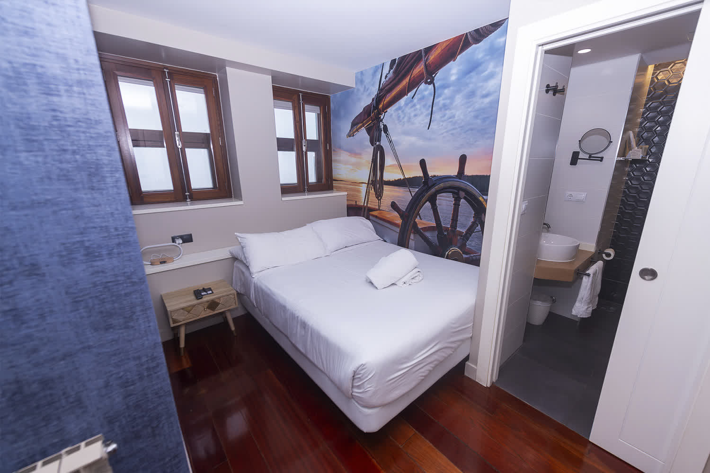
Inspirada en el sistema de comunicación por banderas del antiguo semáforo marítimo. Historia viva junto al faro.
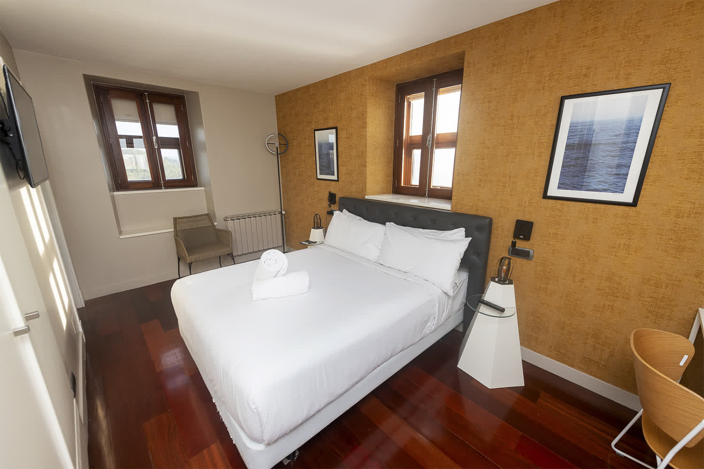
Verás pasar el reflejo de la luz del faro: cada 4 segundos serás testigo de su haz cruzando la noche.
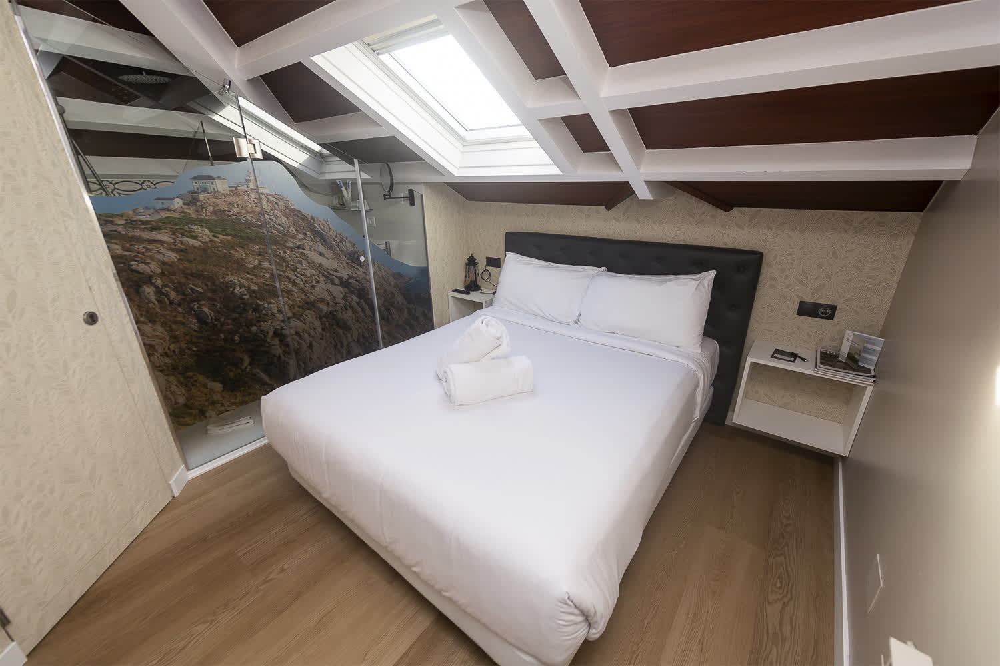
Buhardilla acogedora con cama queen size de 1,50 m, smart TV, agua mineral de cortesía y cafetera incluida.
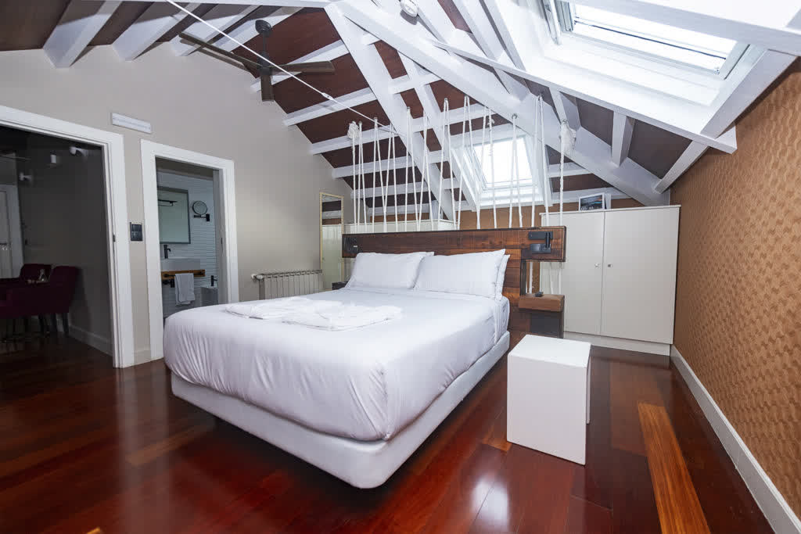
Temática de naufragios centenarios. Artefactos marítimos reales y las historias legendarias de la Costa da Morte.
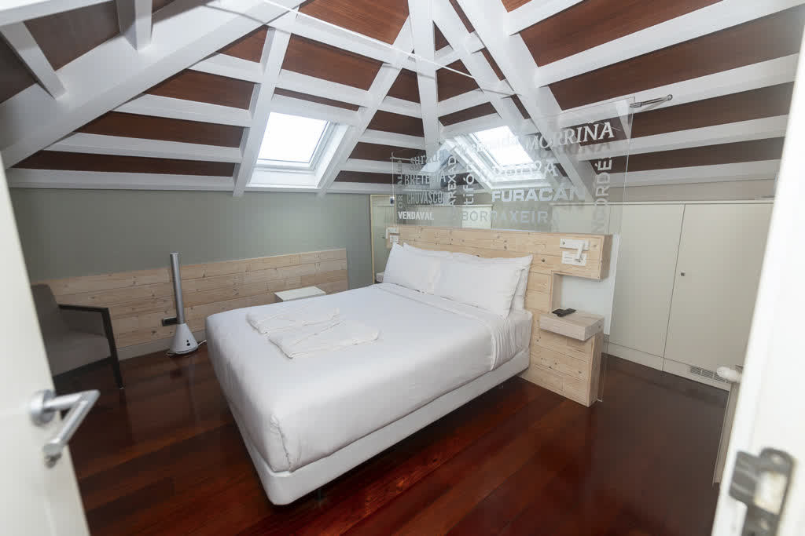
Sentirás los vientos del Nordés y verás las olas desde la seguridad y confort de tu habitación. Naturaleza en estado puro.
Todas las habitaciones incluyen cama king size, nórdico, almohadas dobles, jacuzzi, doble lavabo, amenities ecológicos Bionature, espejo de aumento, secador, TV de 42 pulgadas, room service, caja fuerte y wifi gratuito.
Reservar habitación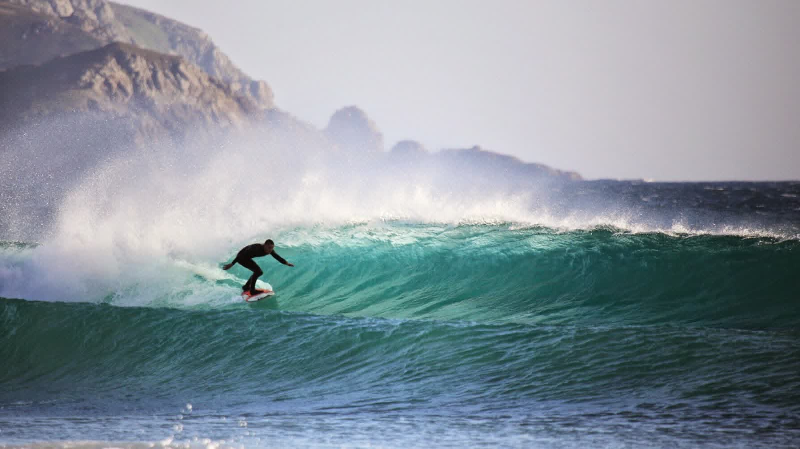
Surf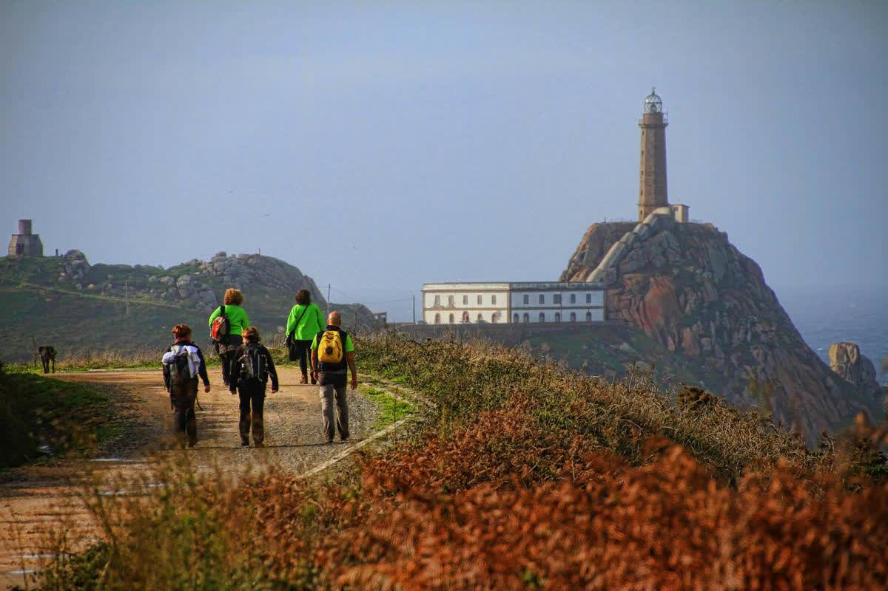
Rutas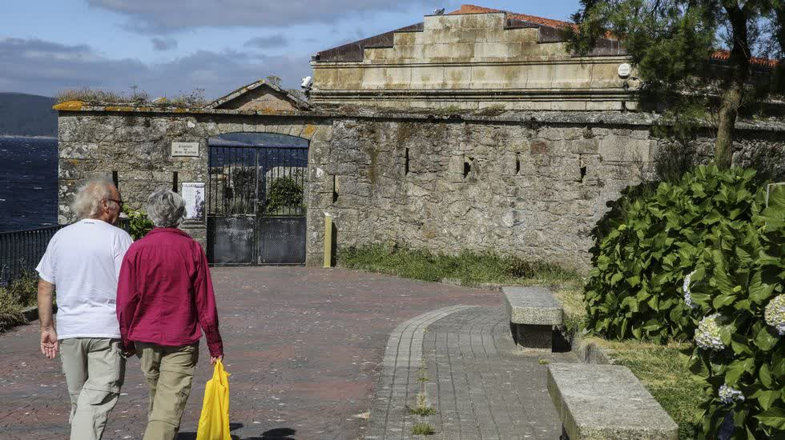
Cocina gallega de mercado con producto del mar certificado Km 0 Mar Galaica.
Una amplia oferta gastronómica centrada en el producto gallego. En temporada alta, platos para compartir y raciones típicas con una cuidada presentación y elaboraciones originales. En temporada baja, cocina de mercado y temporada: guisos tradicionales y marisco fresco de las lonjas cercanas.
Certificado Mar Galaica y Km 0: todo el marisco procede de las lonjas de Fisterra, Corcubión, O Pindo, Lira, Muros, O Freixo, Noia, Portosín y Porto do Son. Pesca artesanal, consumo responsable.
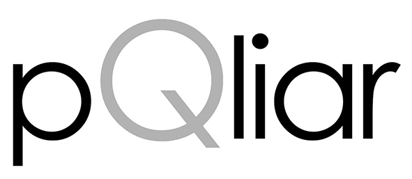
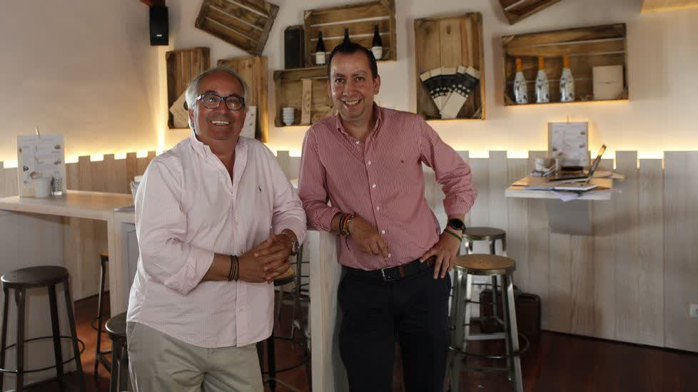
Algo rápido, rico y sabroso para disfrutar frente al infinito.
Montaditos, empanadas, raciones y los famosos cubos para llevar: de cerveza, godello o albariño con hielo. Pensado para disfrutar en la explanada, frente a la escultura del Centolo, mientras el sol se despide de Europa.
Ideal para peregrinos que llegan al final del Camino, excursionistas y visitantes que quieren saborear Galicia sin prisas, con las mejores vistas del mundo como telón de fondo.
El fin del mundo conocido. Acantilados, faros, naufragios y las playas más salvajes de Galicia.
Fisterra, del latín finis terrae: el lugar donde terminaba el mundo conocido para los romanos. Un municipio de 5.000 habitantes en el extremo occidental de Galicia, a 100 km de Santiago de Compostela. Cuatro parroquias, un cabo legendario y un faro que lleva alumbrando el Atlántico desde 1853.
Su nombre lo dice todo. Una costa abrupta con acantilados imponentes como Cabo Vilán, playas enormes como Carnota (la más larga de Galicia) o Baldaio, y la memoria de cientos de naufragios que forjaron la identidad de sus gentes. El Camino de Santiago llega hasta aquí: muchos peregrinos eligen Finisterre como destino final.
Martes y viernes
24 de junio
Último fin de semana de julio
Primer domingo de agosto
Reserva directamente con nosotros para obtener las mejores condiciones.
Puedes reservar por teléfono, por email o a través de nuestra web oficial. Te confirmaremos la disponibilidad y las condiciones de tu estancia.
981 110 210También: info@hotelsemaforodefisterra.com
Junto al Faro de Fisterra, en el punto más occidental de Galicia.